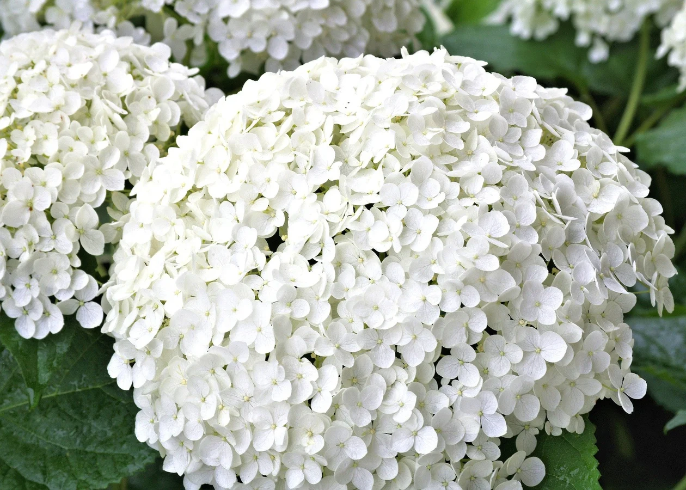

Hydrangea
macrophylla
เป็นไม้ดอกที่มีอายุยืนหลายปีมีถิ่นกำเนิดในจีนและญี่ปุ่น
กลีบดอกหลากสีสันที่เราเห็นกันนั้นแท้จริงแล้วคือกลีบเลี้ยงของดอกไฮเดรนเยีย กลีบดอกที่แท้จริงนั้นมีขนาดเล็กอยู่บริเวณใจกลางของโคนกลีบเลี้ยง และส่วนใหญ่ดอกมักจะเป็นหมัน
- ไฮเดรนเยียสีฟ้า หมายถึง ความเรียบง่าย เข้าอกเข้าใจ การให้อภัย
- ไฮเดรนเยียสีม่วง หมายถึง ความหรูหรา มีเสน่ห์ที่น่าค้นหา
ABOUT
ไฮเดรนเยีย เป็นดอกไม้ที่มีถิ่นกำเนิดมาจากจีนและญี่ปุ่น และขยายพันธุ์ไปยังหลายประเทศทั่วโลก รวมถึงในไทย เมื่อสมัยรัชกาลที่ 5 เนื่องจากพระองค์ชื่นชอบการปลูกดอกไม้ในพระราชวัง ปัจจุบันนิยมนำดอกไฮเดรนเยียมาประดับตกแต่งงานมงคล ตกแต่งเค้ก ขนม หรือจัดช่อมอบให้คนที่รักและห่วงใย
ความหมายที่โด่งดังที่สุดของไฮเดรนเยียคือ ‘หัวใจอันเย็นชา’ ทว่าความเย็นชาที่แท้จริงของเจ้าหล่อนเห็นจะไม่ใช่แค่ความหมาย หากแต่เป็นฤทธิ์ของส่วนต่างๆ ในลำต้นตั้งแต่ใบจนถึงรากที่มีพิษรุนแรง หากเผลอรับประทานเข้าไปอาจทำให้เกิดอาการท้องร่วง อาเจียน ระบบทางเดินหายใจติดขัด ไปจนถึงเสียชีวิตได้ หากใครชอบดอกไฮเดรนเยีย ก็แนะนำให้เดินทางไปบาหลี เพราะไฮเดรนเยียที่นั่นมีราคาถูกมาก และมีท้องทุ่งไฮเดรนเยียตระการตาที่แม้แต่คนในท้องถิ่นก็ไม่รู้ว่ามีให้ชม
TYPE
ไฮเดรนเยียเป็นไม้ดอกที่สามารถเปลี่ยนสีตามสภาพความเป็นกรดเป็นด่างของดิน และปริมาณธาตุอาหารที่ได้รับ เช่น หากต้องการให้ไฮเดรนเยียมีสีชมพูให้ใช้ปุ๋ยที่มีจำนวนฟอสฟอรัสสูง พร้อมกับใส่ปุ๋ยซุปเปอร์ฟอสเฟตเพิ่มให้ต้นละ 1 ช้อนชาทุกๆ 2 สัปดาห์ หรือต้องการให้มีสีฟ้า ให้เติมอะลูมิเนียมซัลเฟตทุกๆ 2 สัปดาห์ เนื่องจากอะลูมิเนียมจะทำให้เนื้อเยื่อของดอกเกิดเป็นสีฟ้า
- ไฮเดรนเยียสีชมพู หมายถึง ความอ่อนโยน คามรักที่เต็มไปด้วยความจริงใจ
- ไฮเดรนเยียสีขาว หมายถึง เป็นความบริสุทธิ์ใจของผู้ให้ที่มอบให้กับผู้รับ ความอดทน
- ไฮเดรนเยียสีเขียว หมายถึง ความสวยงามที่เป็นไปตามธรรมชาติ ไม่จำเป็นต้องปรุงแต่งสิ่งใดเพิ่ม
PINK
ไฮเดรนเยียสีชมพู หมายถึง ความอ่อนโยน ความรักที่เต็มไปด้วยความจริงใจ

WHITE
ไฮเดรนเยียสีขาว หมายถึง เป็นความบริสุทธิ์ใจของผู้ให้ที่มอบให้กับผู้รับ ความอดทน
GREEN
ไฮเดรนเยียสีเขียว หมายถึง ความสวยงามที่เป็นไปตามธรรมชาติ ไม่จำเป็นต้องปรุงแต่งสิ่งใดเพิ่ม
ANECDOTE
ทุ่งไฮเดรนเยีย เชียงใหม่ ทุ่งดอกไม้สวย
1. ทุ่งไฮเดรนเยียอินทนนท์ สวนคุณทองดี
เส้นทางเข้าไปยังสวน ไม่แนะนำสำหรับรถเล็กหรือรถเก๋ง เนื่องด้วยถนนจะเป็นทางลูกรัง จึงจำเป็นต้องใช้รถของคนในพื้นที่เนื่องจากมีความชำนาญในการใช้เส้นทางและมีความปลอดภัยต่อผู้โดยสาร
- ที่อยู่ : บ้านผาหมอน ตำบลบ้านหลวง อำเภอจอมทอง จังหวัดเชียงใหม่
- พิกัด : https://goo.gl/maps/JAou7xGYJH4rMSZ5A
- เปิดให้เข้าชม : 08.00-17.00 น. (เปิดให้เข้ามชมถึงต้นเดือนมกราคทมปีหน้า)
- โทร : 08-9998-4624
2. สวนดอกไฮเดรนเยีย ม่อนแจ่ม
จะบานสวยที่สุดให้ได้เข้าชมในช่วงหน้าฝนแบบนี้ค่ะ ใครที่รอกันอยู่ ก็แวะไปเที่ยวได้เลย เราจะได้เจอกับดอกไฮเดรนเยียสีฟ้าสวย ท่ามกลางความเขียวขจี และไอหมอก เรียกได้ว่าน่าประทับใจสุดๆ อีกทั้งยังมีดอกไม้ชนิดอื่นๆ ที่ขึ้นแซมๆ ไปในสวน
- ที่อยู่ : ตำบลแม่แรม อำเภอแม่ริม เชียงใหม่
- พิกัด : https://goo.gl/maps/g8JHbCa5v1waqurm7
- เปิดให้เข้าชม : 06.30-18.00 น.
3. ทุ่งดอกไฮเดรนเยีย โครงการหลวงขุนแปะ
- ที่อยู่ : โครงการหลวงขุนแปะ ตำบลบ้านแปะ อำเภอจอมทอง จังหวัดเชียงใหม่
- พิกัด : https://goo.gl/maps/dEkFuKguushJEpHi8
- เปิดให้เข้าชม : 06.00-18.00 น.
แหล่งที่มาของข้อมูล RAKDOK รูปภาพและเนื้อหา